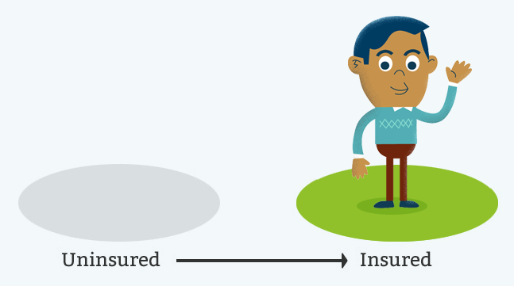
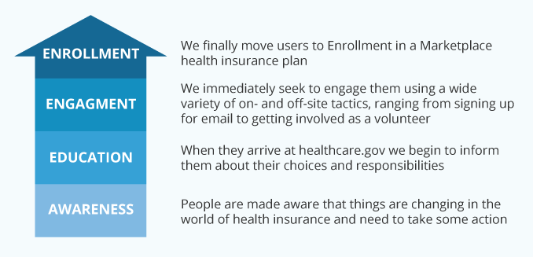

While creating the new healthcare.gov, we identified and embraced three overarching concepts that guided our work. Below we identify these, followed by a list of seven principles that define the site itself.
1. Our goal: Convert the uninsured
The goal of the site from June 2013 until March 2014 is simple: to convert uninsured Americans into insured ones. Our visual design, information architecture, content, and technology solutions are all designed to accomplish this. We recognize that the site also needs to educate the insured about the Affordable Care Act, whose numbers will increase significantly in 2014. We have developed strategies to achieve those goals. But from June through March, they take a back seat to the essential goal of converting the uninsured.

2. The Ladder of Engagement
In order to convert the uninsured, we must encourage them to participate in a complex process that is potentially intimidating and frustrating. To address this, we have created a framework we call The Ladder of Engagement.

Some users will move up the ladder quickly, even in a single day. For most others, it will take weeks or months. We will remain engaged with them all along the way, no matter how long their journey takes.
3. Build trust
In order to move users from Awareness to Action, we must go well beyond providing the right information in the right place at the right time: We must establish and build their trust from the moment they arrive at the site. If users do not trust that healthcare.gov understands, respects, and serves them, they will not stay with us. Our visual design, content, IA, and off-site messaging are designed to establish and deepen trust.